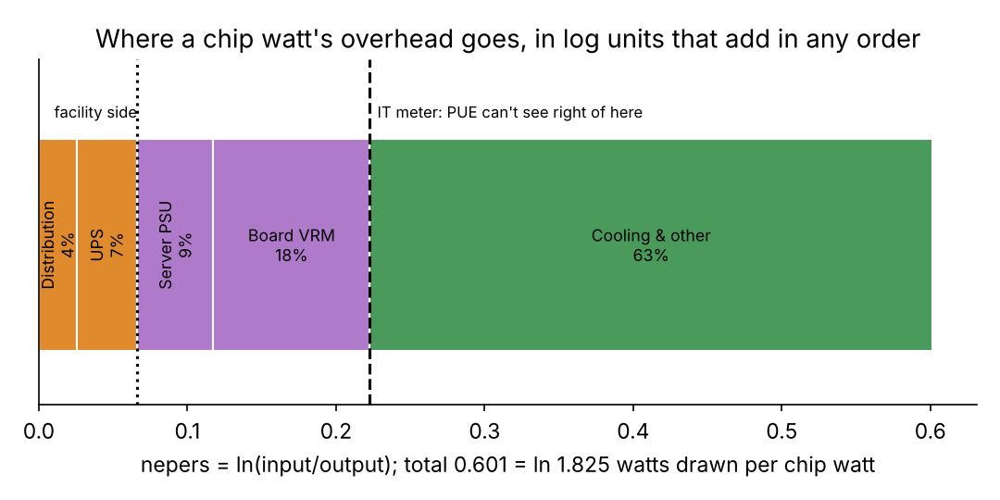

The power chain is a circle-operation fold
Write each stage as overhead odds r = 1/η − 1. Then the whole chain's odds are the circle operation ∘₁ (called mult-add before 1.0) of the stages, exactly, in any order. Geometrically each stage stretches a rectangle by (1 + r), so the chain is a staircase whose total area is the product.
| Stage (published mid-range) | η | odds |
|---|---|---|
| Distribution and transformers | 97.5% | 0.026 |
| UPS, double conversion | 96% | 0.042 |
| Server power supply | 95% | 0.053 |
| Board voltage regulators | 90% | 0.111 |
| Chain | 80.0% | 0.250 |
The naive sum of losses says 21.5%; the true loss is 20.0%. Two things follow. First, PUE never sees the last two stages, because they sit inside the IT meter: "IT power" is already 1.17 times chip power. Splitting the fold at the meter gives TUE = ITUE × PUE, which Patterson and colleagues proposed in 2013. Second, improving any stage's efficiency by the same ratio saves the same share of the whole facility, wherever it sits. So rank upgrades by the log of the efficiency gain, not by watts lost at that stage.
| Upgrade | Facility saved | US scale |
|---|---|---|
| UPS eco or high-efficiency mode (96 → 98.5%) | 2.5% | 4.5 TWh/yr |
| Power supply Platinum → Titanium (94 → 96%) | 2.1% | 3.7 TWh/yr |
| Voltage regulators 88 → 92% | 4.3% | 7.7 TWh/yr |
Verdict: exact, but known physics. The 2.5% for eco mode matches the 2 to 3% the industry quotes, which is a good check that the model is honest.

Log units (nepers) add in any order, so this split doesn't depend on which stage you count first. The waterfall split in watts does.